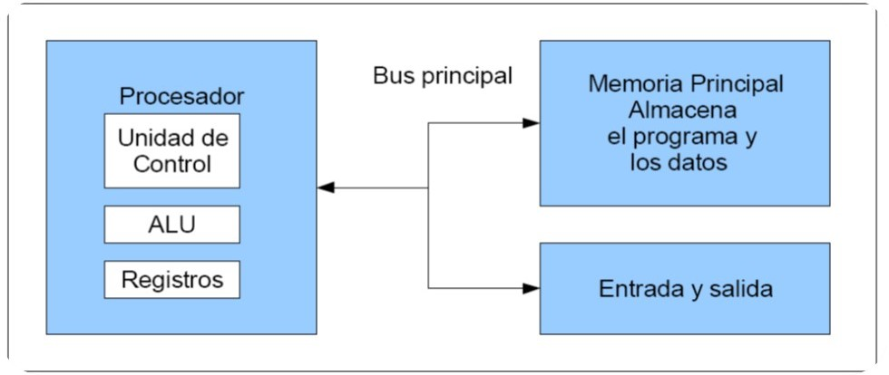
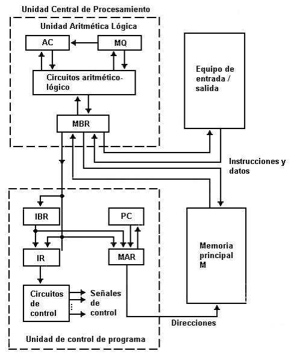
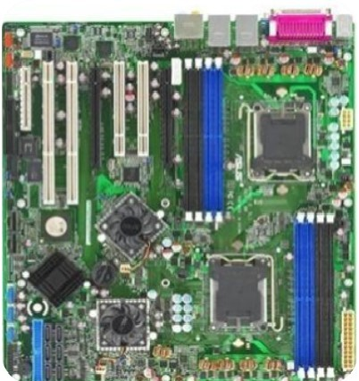
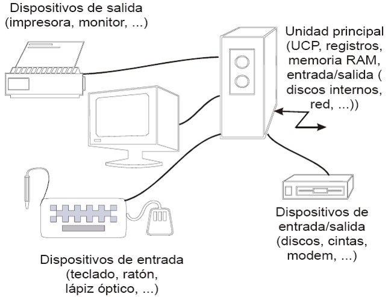
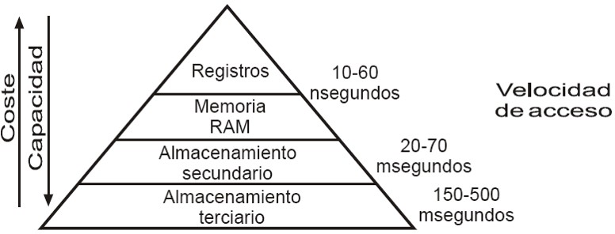
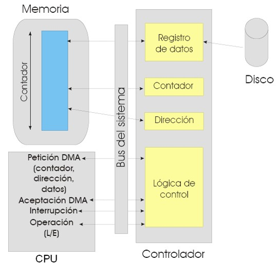
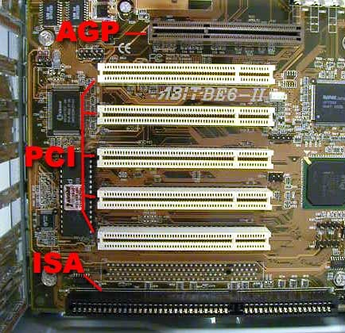
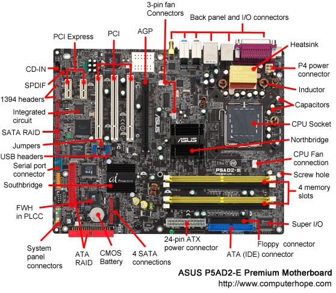
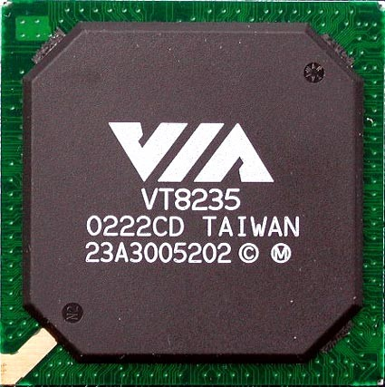
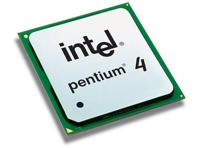

En el entorno informático proporciona una descripción de la construcción y distribución física de los componentes de la computadora.
La arquitectura de una computadora explica la situación de sus componentes y permite determinar las posibilidades de que un sistema informático, con una determinada configuración, pueda realizar las operaciones para las que se va a utilizar.
Cuando se describe una computadora se debe distinguir entre arquitectura y organización.
La arquitectura de computadoras se refiere a los atributos de un sistema que son visibles a un programador, es decir aquellos atributos que tienen un impacto directo en la ejecución lógica de un programa.
Ejemplos de atributos arquitectónicos: Conjunto de instrucciones, número de bits usados para representar datos, mecanismos de entrada salida y técnicas de direccionamiento de memoria.
La organización de computadoras se refiere a las unidades funcionales y sus interconexiones, que materializan especificaciones arquitectónicas.
Ejemplos de atributos de organización: son los detalles del hardware transparentes para el programador, tales como señales de control, interfaces entre la computadora y los periféricos y la tecnología de memoria utilizada.
Por poner un ejemplo, una cuestión de arquitectura es si la computadora tendrá la instrucción de multiplicar.
Una cuestión de organización es si esa instrucción será implementada por una unidad especializada en multiplicar o por un mecanismo que haga un uso iterativo de la unidad de suma del sistema.
Muchos fabricantes de computadoras ofrecen una familia de modelos, todos con la misma arquitectura pero con diferencias en la organización.
Una arquitectura puede sobrevivir muchos años, pero su organización cambia con la evolución de la tecnología. La arquitectura de la IBM Sistema 370 apareció por primera vez en 1970 e incluía varios modelos. Se podía comprar un modelo barato y lento y si la demanda se incrementaba, se podía cambiar a un modelo más caro y rápido sin tener que abandonar el software que ya se había desarrollado.
La computadora es una entidad que interactúa de alguna manera con su entorno externo. En general, todas sus conexiones con el exterior pueden ser clasificadas como dispositivos periféricos o líneas de comunicación.
Controla el funcionamiento de la computadora y lleva a cabo las funciones de procesamiento de datos. Frecuentemente se le llama procesador.
Almacena datos
Transfiere datos entre la computadora y el exterior.
Es un mecanismo que proporciona la comunicación entre la CPU, la memoria y E/S.
Controla el funcionamiento de la CPU y por tanto de la computadora.
Lleva a cabo las funciones de procesamiento de datos.
Es el área de almacenamiento interno temporal de datos para la CPU.
Son mecanismos que proporcionan comunicación entre la unidad de control, ALU y registros.
La arquitectura de computadoras es el diseño conceptual y la estructura operacional fundamental de un sistema de computadora.
Es decir, es un modelo y una descripción funcional de los requerimientos y las implementaciones de diseño para varias partes de una computadora, con especial interés en la forma en que la unidad central de proceso (CPU) trabaja internamente y accede a las direcciones de memoria.
Y la organización de computadoras es la forma de seleccionar e interconectar componentes de hardware para crear computadoras según los requerimientos de funcionalidad, rendimiento y costo.
Estas arquitecturas se desarrollaron en las primeras computadoras electromecánicas y de tubos de vacío.
Aun son usadas en procesadores empotrados de gama baja y son la base de la mayoría de las Arquitecturas modernas.
Una característica importante de este modelo es que tanto los datos como los programas, se almacenan en la memoria antes de ser utilizados.

Fue utilizada en la computadora ENIAC (Electronic Numerical Integrator And Computer)
Fue la primera computadora electrónica de uso general en el mundo.
Consiste en una unidad central de proceso que se comunica a través de un solo bus con un banco de memoria en donde se almacenan tanto los códigos de instrucción del programa, como los datos que serán procesados por este.
La ENIAC Uno de los inconvenientes más grandes de la ENIAC era que tenia que ser programada manualmente mediante conmutadores y conectando y desconectando cables.
 Registro Temporal de Memoria “Buffer” (MBR): Contiene una palabra que debe ser almacenada en memoria, o recibe una palabra procedente de la memoria.
Registro Temporal de Instrucción (IBR): Almacena temporalmente la instrucción contenida en la parte derecha de una palabra.
Registro de Instrucción (IR): Contiene el código de operación de la instrucción que se va a ejecutar.
Registro de Dirección de Memoria (MAR): Especifica la dirección de memoria de la palabra que va a ser escrita o leída en MBR.
Contador de Programa (PC): Contiene la dirección de la siguiente pareja de instrucciones que se traerán de memoria.
Acumulador (AC) Multiplicador Cociente (MQ): Se emplean para almacenar temporalmente operandos y resultados de operaciones de la ALU.
La principal desventaja de esta arquitectura, es que el bus de datos y direcciones único se convierte en un cuello de botella por el cual debe pasar toda la información que se lee de o se escribe a la memoria, obligando a que todos los accesos a esta sean secuenciales.
Esto limita el grado de paralelismo (acciones que se pueden realizar al mismo tiempo) y por lo tanto, el desempeño de la computadora. Este efecto se conoce como el cuello de botella de Von Newman.
Esta arquitectura surgió en la universidad del mismo nombre, poco después de que la arquitectura Von Newman apareciera en la universidad de Princeton. Al igual que en la arquitectura Von Newman, el programa se almacena como un código numérico en la memoria, pero no en el mismo espacio de memoria ni en el mismo formato que los datos.
Por ejemplo, se pueden almacenar las instrucciones en doce bits en la memoria de programa, mientras los datos de almacenan en 8 bits en una memoria aparte.
El hecho de tener un bus separado para el programa y otro para los datos permite que se lea el código de operación de una instrucción, al mismo tiempo se lee de la memoria de datos los operados de la instrucción previa.
Así se evita el problema del cuello de botella de Von Newman y se obtiene un mejor desempeño.
En la actualidad la mayoría de los procesadores modernos se conectan al exterior de manera similar a la arquitectura Von Newman, con un banco de memoria masivo único, pero internamente incluyen varios niveles de memoria cache con bancos separados en cache de programa y cache de datos, buscando un mejor desempeño sin perder la versatilidad.
Las arquitecturas segmentadas o con segmentación del cauce buscan mejorar el desempeño realizando paralelamente varias etapas del ciclo de instrucción al mismo tiempo.
El procesador se divide en varias unidades funcionales independientes y se dividen entre ellas el procesamiento de las instrucciones.
Otra aportación frecuente que aumenta el rendimiento del computador es el fomento del paralelismo implícito, que consiste en la segmentación del procesador (pipe-line), descomponiéndolo en etapas para poder procesar una instrucción diferente en cada una de ellas y trabajar con varias a la vez.
La arquitectura en pipeline (basada en filtros) consiste en ir transformando un flujo de datos en un proceso comprendido por varias fases secuenciales, siendo la entrada de cada una la salida de la anterior.
En un procesador con segmentación del cause, cada una de estas etapas se asigna a una unidad funcional diferente, la búsqueda a la unidad de búsqueda y la ejecución a la unidad de ejecución.
Estas unidades pueden trabajar en forma paralela en instrucciones diferentes.
Estas unidades se comunican por medio de una cola de instrucciones en la que la unidad de búsqueda coloca los códigos de instrucción que leyó para que la unidad de ejecución los tome de la cola y los ejecute.
Esta cola se parece a un tubo donde las instrucciones entran por un extremo y salen por el otro. De esta analogía proviene el nombre en ingles: Pipelining o entubamiento.
Esta arquitectura es muy común en el desarrollo de programas para el intérprete de comandos, ya que se pueden concatenar comandos fácilmente con tuberías (pipe).
También es una arquitectura muy natural en el paradigma de programación funcional, ya que equivale a la composición de funciones matemáticas.
La arquitectura pipe-line se aplica en dos lugares de la maquina, en la CPU y en la ALU.
Veamos en que consiste el pipe-line y tratemos de entender porque el pipe-line mejora el rendimiento de todo el sistema.
En informática, un pipeline o tubería es un conjunto de elementos procesadores de datos conectados en serie, en donde la salida de un elemento es la entrada del siguiente. Los elementos del pipeline son generalmente ejecutados en paralelo, en esos casos, debe haber un almacenamiento tipo buffer insertado entre elementos.
En informática Pipeline es sinónimo de segmentación.
1. Pipelines gráficos, se encuentran en la mayoría de las tarjetas gráficas, consiste en múltiples unidades aritméticas o CPUs completas, que implementan variados escenarios de operaciones típicas de renderizado, por ejemplo, cálculos de luz y colores, renderizado, proyección de perspectiva, etc.
2. Pipelines de software o tuberías, consiste en múltiples procesos ordenados de tal forma que el flujo de salida de un proceso alimenta la entrada del siguiente proceso. Por ejemplo, los pipelines de Unix.
Veamos una CPU no organizada en pipe-line:
Si se trata de una instrucción a ser ejecutada por la ALU podemos decir que la CPU realiza a lo largo del ciclo de máquina estas 5 tareas.
Una vez que termina de ejecutar una instrucción va a buscar otra y tarda en ejecutarla un tiempo T, es decir cada T segundos ejecuta una instrucción.
¿Qué sucede si dividimos en 5 unidades según las 5 cosas que realiza la CPU?
Supongamos la CPU dividida en 5 unidades, de tal forma que c/u tarde lo mismo en realizar su partecita. Es decir c/u tardará T/5.
Para que una instrucción se ejecute se necesita T segundos entonces para que usar pipe-line?
Si ocurre esto en una CPU normal a una con pipe-line, la cantidad de instrucciones que se hacen por segundo aumenta, es decir aumenta el flujo de instrucciones que se ejecutan por segundo.
 SMP es el acrónimo de Symmetric Multi-Processing, multiproceso simétrico. Se trata de un tipo de arquitectura de c en que dos o más procesadores comparten una única memoria central.
SMP es el acrónimo de Symmetric Multi-Processing, multiproceso simétrico. Se trata de un tipo de arquitectura de c en que dos o más procesadores comparten una única memoria central.
La arquitectura SMP (Multi-procesamiento simétrico, también llamada UMA, de “Uniform Memory Access”), se caracteriza por el hecho de que varios microprocesadores comparten el acceso a la memoria y periféricos de I/O, Normalmente conectados por un bus común.
Se conocen como simétricos, ya que ningún procesador toma el papel de maestro y los demás de esclavos, sino que todos tienen derechos similares en cuanto al acceso a la memoria y periféricos y ambos son administrados por el sistema operativo, es decir, compiten en igualdad de condiciones por dicho acceso, de ahí la denominación “simétrico”.
Los sistemas multiproceso simétrico permiten que cualquier procesador trabaje en cualquier tarea sin importar su localización en memoria; con un propicio soporte del sistema operativo, estos sistemas pueden mover fácilmente tareas entre los procesadores para garantizar eficientemente el trabajo.

Una computadora SMP se compone de microprocesadores independientes que se comunican con la memoria a través de un bus compartido.
Dicho bus es un recurso de uso común. Por tanto, debe ser arbitrado para que solamente un microprocesador lo use en cada instante de tiempo.
Si las computadoras con un solo microprocesador tienden a gastar considerable tiempo esperando a que lleguen los datos desde la memoria, SMP no mejora ni empeora lo que sí es que hay varios parados en espera de datos.
Cuando se desea incrementar el desempeño más allá de lo que permite la técnica de segmentación del cauce (limite teórico de una instrucción por ciclo de reloj), se requiere utilizar más de un procesador para la ejecución del programa de aplicación.
Son computadoras pensadas para aplicar un mismo algoritmo numérico a una serie de datos matriciales, en especial en la simulación de sistemas físicos complejos.

El corazón de una computadora lo constituye el CPU.
Sin embargo, no serviría de nada sin:
Dispositivos de almacenamiento secundario (discos) y terciario (cintas, CD, DVD).
Dispositivos periféricos que le permiten interactuar con el usuario.
Generalmente están fuera de la computadora y se conectan a ella mediante cable.
Son los teclados, ratones, micrófonos, cámaras y cualquier otro dispositivo de E/S que se nos ocurra conectar a la computadora.
Legibles para el usuario.
Permiten la comunicación entre el usuario y la computadora, ya sea de entrada (ratón, teclado, etc.) o salida (pantalla, impresora, etc.).
Legibles para la máquina.
Proporcionan almacenamiento no volátil de datos para abastecer a los programas que ejecuta el CPU.
Permiten conectar a la computadora con otras computadoras a través de una red.
Los dos dispositivos más importantes son los módem y las tarjetas de interfaz de red.

El gran problema de todos los dispositivos de E/S es que son muy lentos.
El CPU procesa instrucciones a mas de 1 GHz y la memoria RAM tiene un tiempo de acceso de nanosegundos.
Los dispositivos de E/S más rápidos tienen una velocidad del orden de los milisegundos.
Esta diferencia en la velocidad de acceso, y el hecho de que las aplicaciones son cada vez más interactivas y necesitan más E/S, hace que los sistemas de E/S sean el cuello de botella más importante de los sistemas. Por ello los SO dedican un gran esfuerzo en desarrollar y optimizar los mecanismos de E/S.
La visión del sistema de E/S puede ser muy distinta dependiendo del nivel de detalle necesario en su estudio.
Para los programadores, el sistema de E/S es una caja negra que lee y escribe datos en dispositivos externos a través de una funcionalidad bien definida.
Para los fabricantes de dispositvos, un dispositivo es un instrumento muy complejo que incluye cientos de miles de componentes electrónicos o electro-mecánicos.
Los diseñadores de SO se encuentran en un lugar intermedio entre los dos anteriores.
Les interesa la funcionalidad del dispositivo, aunque a un nivel de detalle mucho más grande que la funcionalidad que espera el programador de aplicaciones.
También les interesa conocer la interfaz física de los dispositivos y su comportamiento interno para poder optimizar los métodos de acceso a los mismos.
Son muy variados, casi tanto como los dispositivos de E/S.
Muchos de ellos pueden controlar múltiples dispositivos (los de disco).
Otros, como los canales de E/S, incluyen su propia CPU y bus para controlar la E/S por programa y evitar interrupciones en el CPU de la computadora.
En los últimos años ha existido un esfuerzo importante de estandarización de los dispositivos, lo que permite usar un mismo controlador para dispositivos de distintos fabricantes.
El controlador es el componente más importante desde el punto de vista del SO, ya que constituye la interfaz del dispositivo con el bus de la computadora y es el componente que se ve desde el CPU.
Su programación se lleva a cabo mediante una interfaz a muy bajo nivel que proporciona acceso a una serie de registros del controlador.
Las características del controlador son muy importantes, ya que definen el aspecto del periférico para el SO.
Fundamental: Dirección de E/S, Unidad de transferencia e interacción computadora-controlador.
Para iniciar una operación de E/S, el CPU tiene que escribir sobre los registros (datos, control, estado) los datos de la operación a través de una dirección de E/S o de memoria asignada únicamente al controlador.
El modelo de dispositivos por puerto es clásico de las arquitecturas Intel.
Cuando se instala un dispositivo, a su controlador se le asigna un puerto de E/S, una interrupción de hardware y un vector de interrupción.
En una operación de E/S el CPU la ejecuta operaciones del tipo portin o portout con la dirección del puerto del dispositivo y con parámetros para indicar que puerto se desea manipular.
El problema de este tipo de direccionamiento es que exige conocer las direcciones de E/S y programar las instrucciones especiales de E/S, lo que es significativamente distinto del modelo de memoria.
El modelo proyectado en memoria asigna a cada dispositivo de E/S un rango de direcciones de memoria a través de las cuales se escribe sobre los registros del controlador
No hay instrucciones específicas de E/S, sino que las operaciones se llevan a cabo usando instrucciones máquina del manejo de memoria.
Mapa único de direcciones de memoria
Se reserva una zona de memoria física para asignar las direcciones de E/S.
La transferencia de información entre un periférico y el procesador se realiza mediante la ejecución de una instrucción de E/S.
El procesador es el responsable de extraer o enviar datos entre la memoria y el controlador de dispositivo, lo cual implica que el proceso tiene que esperar mientras se realiza la transferencia.
Ventaja: no hay gasto de tiempo de gestión de interrupción.
Desventaja: consume mucha CPU para dispositivos poco ocupados.
El procesador envía la orden de E/S al controlador del dispositivo y no espera, se dedica a otras tareas hasta que le llega una interrupción del dispositivo que indica que se ha realizado la operación solicitada.
El gestor de interrupciones recibe y maneja la interrupción.
Enmascarables para ignorar o retrasar interrupciones.
El vector de interrupción tiene las direcciones de memoria de los manejadores de interrupción.
Se procesan según distintas políticas.
Prioridad, FIFO, etc.
Algunas interrupciones no se pueden enmascarar (Ej. reset).
Los mecanismos de interrupción también se utilizan para el manejo de excepciones (Ej. Instrucción Errónea).
La parte correspondiente a lo particular del dispositivo contiene el manejador que el fbricante desarrolló para manipular su dispositivo.

Se utiliza para evitar la E/S programada de grandes bloques de datos.
Necesita un controlador con DMA.
Evita el uso del CPU transfiriendo los datos directamente entre los dispositivos de E/S y la memoria.
Básico para aprovechar el CPU en un sistema multiprogramado, ya que libera tiempo del CPU que puede ser utilizado para ejecutar otros programas.
Proporciona servicios de E/S síncrona y asíncrona a las aplicaciones y una interfaz homogénea ocultando los detalles de bajo nivel.
Permite acceder a los manejadores de dispositivos de almacenamiento de forma transparente.
Permite acceder a los manejadores de cada tipo en particular de forma transparente.
Admite únicamente operaciones a nivel bloque.
Admite únicamente operaciones a nivel bloque.

El chipset es el conjunto de chips que se encarga de controlar algunas funciones concretas del ordenador, como la forma en que interacciona el microprocesador con la memoria o la caché, o el control de los puertos y slots ISA, PCI, AGP, USB.
El chipset de una placa base es un conjunto de chips cuyo número varía según el modelo y que tiene como misión gestionar todos los componentes de la placa base tales como el micro o la memoria; integra en su interior las controladoras encargadas de gestionar los periféricos externos a través de interfaces como USB, IDE, serie o paralelo.
El chipset es el encargado en enviar y recibir información a cada uno de los elementos que conforman a una placa madre, es decir al procesador, memoria, buses de datos, entre otros más.
Es justamente así que el chipset trabaja con cada uno de los elementos de una placa madre, ayudándose para ello de dos puentes que le sirven de mucho en cada función. Así por ejemplo el chipset tiene un puente norte y un puente sur, mismos que tienen sus determinadas áreas de manejo y control, pero que a la final acaban comunicándose con su centro que es el chipset.
En el chipset se almacena toda la información que contiene una placa madre las características de la misma tales como el tipo de memoria que debe de ser instalada en dicha placa así como la capacidad máxima que esta puede aceptar tanto en la velocidad del procesador como del tipo de memoria RAM a implementar.
También llamado “puente norte”, siempre fue calificado como el chip principal del conjunto, y el fundamental para el rendimiento del equipo, ya que es el que se encarga de intercomunicar a los dispositivos más rápidos de toda computadora estándar: el procesador, la memoria RAM y el puerto AGP.
Se encarga de controlar un gran número de dispositivos. Las funciones principales, y comunes en todos los chipset actuales, son el bus PCI, los puertos IDE y USB, y un adaptador de sonido. En realidad, internamente todos estos dispositivos están conectados al bus PCI.
Unos chipsets bastante buenos, se caracterizan por tener soporte para casi todo lo imaginable aunque suelen ser algo más lentos que éstos al equiparlos con micros Intel.
Como los anteriores, sus capacidades son avanzadas, aunque su velocidad sea en ocasiones algo más reducida si los usamos con micros Intel.

A decir verdad, aún sin competencia seria, lo que no es de extrañar teniendo el Pentium II sólo un añito... y siendo de Intel
Clases
440 FX
440 LX
440 BX
440 EX
440 ZX
UCP o procesador, interpreta y lleva a cabo las instrucciones de los programas, efectúa manipulaciones aritméticas y lógicas con los datos y se comunica con las demás partes del sistema. Una UCP es colección compleja de circuitos electrónicos.
Cuando se incorporan todos estos circuitos en un chip de silicio, a este chip se le denomina microprocesador. La UCP y otros chips y componentes electrónicos que se ubican en un tablero de circuitos o tarjeta madre.
El controlador del bus se encarga de la frecuencia de funcionamiento y las señales de sincronismo, temporización y control. Está ubicado en un chip en la placa base.
El Bus es la vía a través de la que se van a transmitir y recibir todas las comunicaciones, tanto internas como externas, del sistema informático.El bus es solamente un Dispositivo de Transferencia de Informaciónentre los componentes conectados a él, no almacena informaciónalguna en ningún momento. Los datos, en forma de señal eléctrica,sólo permanecen en el bus el tiempo que necesitan en recorrer la distancia entre los dos componentes implicados en la transferencia.
El puerto paralelo (protocolo Centronics) se utiliza generalmente para manejar impresoras. Sin embargo, dado que este puerto tiene unconjunto de entradas y salidas digitales, se puede emplear para hacerprácticas experimentales de lectura de datos y control de dispositivos. Un puerto paralelo es una interfaz entre un ordenador y un periféricocuya principal característica es que los bits de datos viajan juntosenviando un byte (8 bits) completo o más a la vez. Es decir, seimplementa un cable o una vía física para cada bit de datos formandoun bus.
El puerto PS/2 toma su nombre de la serie de ordenadores IBM Personal System/2 en que fue creada por IBM en 1987, y empleada para conectar teclados y ratones. Muchos de los adelantos presentados fueroninmediatamente adoptados por el mercado del PC, siendo este conectoruno de los primeros. La comunicación en ambos casos es serial (bidireccional en el caso delteclado), y controlada por micro-controladores situados en la placa madre.
Un puerto serie o puerto serial es una interfaz de comunicaciones de datos digitales, frecuentemente utilizado por computadoras y periféricos, en donde la información es transmitida bit a bit enviando un solo bit a la vez,en contraste con el puerto paralelo que envía varios bits simultáneamente. La comparación entre la transmisión en serie y en paralelo se puedeexplicar con analogía con las carreteras. Una carretera tradicional de un sólo carril por sentido sería como la transmisión en serie y una autovía con varios carriles por sentido sería la transmisión en paralelo, siendo loscoches los bits.
El Universal Serial Bus (bus universal en serie) es un puerto que sirve para conectar periféricos a una computadora. Fue creado en 1996 por siete empresas: IBM, Intel, Northern Telecom, Compaq, Microsoft, Digital Equipment Corporation y NEC.
El estándar incluye la transmisión de energía eléctrica al dispositivo conectado.
Algunos dispositivos requieren una potencia mínima, así que sepueden conectar varios sin necesitar fuentes de alimentación extra. Lamayoría de los concentradores incluyen fuentes de alimentación quebrindan energía a los dispositivos conectados a ellos, pero algunosdispositivos consumen tanta energía que necesitan su propia fuente dealimentación.
El diseño del USB tenía en mente eliminar la necesidad de adquirir tarjetas separadas para poner en los puertos bus ISA, PCI o PCI Express, y mejorar las capacidades plug & play permitiendo a esos dispositivos ser conectados o desconectados al sistema sin necesidad de reiniciar.
Este circuito integrado controla las interrupciones del sistema. Como el Micro-procesador sólo posee dos entradas de interrupción, y puedecontrolar muchas más, es necesario algún integrado que no permitaello. El 8259 cumple este propósito.
El funcionamiento del 8259 es muy sencillo: Supongamos que no queda ninguna interrupción pendiente y el CPU está trabajando en el“Programa principal”. Al activarse una línea de interrupción, el 8259 verifica que no haya otra interrupción pendiente, y si no la hay, envía una señal a través del pin INTR hacia el pin INTR del CPU,adicionalmente, envía a través del bus de datos el número de interrupción que se ha activado, de tal manera que el CPU ya sabe qué servicio de interrupción va a usar.
El mecanismo de acceso directo a memoria está controlado por unchip específico, el DMAC (“DMA Controller”), que permite realizar estos intercambios sin apenas intervención del procesador. En los XT estaba integrado en un chip 8237A que proporcionaba 4 canales de 8 bits (puede mover solo 1 Byte cada vez); sus direcciones de puerto son 000–00Fh. Posteriormente en los AT se instalaron dos de estos integrados y las correspondientes líneas auxiliares en el bus de control.
En contra de lo que podría parecer, el resultado no fue disponer de 8 canales, porque el segundo controlador se colgó en “Cascada” de la línea 4 del primero (más adelante se explica este concepto). Los canales del segundoDMAC está asignado a las direcciones 0C0–0DFh y son de 16 bits.
Pueden mover 2 Bytes (de posiciones contiguas) cada vez. Cada canal tiene asignada una prioridad para el caso de recibirse simultáneamente varias peticiones (los números más bajos tienen prioridad más alta).
Pueden ser utilizados por cualquier dispositivo que los necesite (suponiendo naturalmente que esté diseñado para soportar este modo de operación). Cada sistema los asigna de forma arbitraria, pero hay algunos cuya asignación es estándar.
Es una red secuencial que acepta un código que define la operaque se va a ejecutar y luego prosigue a través de una secuencia de estados, generando una correspondiente secuencia de señalescontrol.
Estas señales de control incluyen el control delectura - escritura y señales de dirección de memoria válida en el busde control del sistema. Otras señales generadas por el controlador se conectan a la unidad aritmética - lógica y a los registros internos del procesador para regular el flujo de información en el procesador y desde, los buses de dirección y de datos del sistema.
Un controlador de vídeo o VDC es un circuito integrado que es el principal componente de un generador de señal de vídeo, un dispositivo encargado de la producción de una señal de vídeo en informática o un sistema de juego. Algunos de Desarrollo de Aldea también generar una buena señal, pero en ese caso no es su función principal.
La mayoría de los CDA se utilizan a menudo en la antigua casa-ordenadores de los años 80, sino también en algunos de los primerossistemas de video juego.
El VDC siempre es el principal componente de la señal de vídeo generador de la lógica, pero a veces también hay otros chips utilizados, tales como RAM para celebrarel píxel de datos, para celebrar ROM carácter fuentes, o quizás algunos discretos lógica, como los registros de cambio eran necesarios para construir un sistema completo. En cualquier caso, es el VDC de la responsabilidad de generar el calendario de las necesarias señales de vídeo, tales como la horizontal y vertical de sincronización de señales, y el intervalo de corte de señal.
Las computadoras electrónicas modernas son una herramienta esencial en muchas áreas: industria, gobierno, ciencia, educación,…, en realidaden casi todos los campos de nuestras vidas.
El papel que juegan los dispositivos periféricos de la computadora es esencial; sin tales dispositivos ésta no sería totalmente útil. A través de los dispositivos periféricos podemos introducir a la computadora datosque nos sea útiles para la resolución de algún problema y porconsiguiente obtener el resultado de dichas operaciones, es decir; podercomunicarnos con la computadora.
La computadora necesita de entradas para poder generar salidas y éstas se dan a través de dos tipos de dispositivos periféricos existentes:
• Dispositivos periféricos de entrada.
• Dispositivos periféricos de salida.
• Unidades de disquete.
• Por malo y anticuado que sea un ordenador, siempre dispone de al menos uno de estos aparatos. Su capacidad es totalmenteinsuficiente para las necesidades actuales, pero cuentan con la ventaja que les dan los muchos años que llevan como estándarabsoluto para almacenamiento portátil.
• Tamaño Tipo de disco Capacidad Explicación.
• 5,25” SS/DD 180 Kb Una cara, doble densidad. Desfasado.
• 5,25” DS/DD 360 Kb Dos caras, doble densidad. Desfasado.
• 5,25” DS/HP 1,2 MB Dos caras, alta densidad. Desfasado pero útil.
• 3,5” DS/DD 720 Kb Dos caras, doble densidad. Desfasado pero muy común.
• 3,5” DS/HD 1,44 MB Dos caras, alta densidad. El estándar actual.
La serie MVP es la familia más versátil de fuentes de alimentación de potencia media que utiliza componentes magnéticos de SMD y convertidos DC-DC internos, combinados con módulos PFC, que pueden ser configurables desde 1 hasta 10 tensiones de salida con valores entre 2 y 60 v. tiene todas las homologaciones de seguridad necesarias y es un producto marcado “CE”.
Las series LP y Net de fuentes de alimentación conmutadas de baja potencia, ofrece una óptima combinación de prestaciones, precio y fiabilidad, así como la tecnología. Ofrecen entre 25 y 350 W y están disponibles en una amplia variedad de configuraciones, tanto en salida única como multi-salida.
ASTEC es el líder mundial en fuentes de alimentación para la telefonía, redes, fibra óptica y otras aplicaciones industriales donde se necesitan alimentadores, cargadores de batería, para conseguir configuraciones N+1. La serie VS es una fuente de alimentación modular, con diseño flexible, que ofrece de 1 a 12 salidas con potencias entre 1000 a 2500 W por unidad.
El negocio de proveer servicios de datos es mucho más complejo que la forma en la que se dan los tradicionales servicios, que con frecuencia se terminan involucrando o necesitando la colaboración de terceras empresas.
1. Desarrollo de nuevos mercados y productos
2. Adquisición y administración de clientes
3. Proveer y desarrollar servicios para la red
4. Administración del negocio
Definitivamente, la tecnología en general ha sido la causa principal y la acción más directa para la transformación del trabajo de las organizaciones en la posguerra del siglo XX. Tanto los bienes de capital «duros» (computadores, teléfonos, videos, facsímiles, grabadoras, etc.), como los programas y sistemas de información y comunicación en general, han incrementado enormemente la productividad y eficiencia de las organizaciones. Tenemos como ejemplos los siguientes: bases de datos en redes de todo orden y topología, sistemas de reservaciones en aerolíneas, sistemas de contabilidad y nóminas, archivos clínicos en centros de salud, sistemas de conmutación electrónica y un sin número de otras aplicaciones a procesos administrativos.
La industrialización de los servicios de tecnología de información va a redefinir el mercado en términos de como las organizaciones evalúan, compran y seleccionan los servicios y como los vendedores desarrollan y establecen precios de los servicios.
Para lograr esta estandarización, se requiere un enfoque hacia las soluciones genéricas y esto debe ser responsabilidad de los proveedores, que deben de desarrollar, operar y administrar el resultado de estos genéricos de TI.
Aunque el servicios de TI están en proceso de madurez, la madurez de la industria se ha incrementado en aspectos evidentes, como la forma en que los servicios son implementados y administrados.
El desarrollo de estas tecnologías y de las telecomunicaciones hahecho que los intercambios de datos crezcan a niveles extraordinarios, simplificándose cada vez más y creando nuevas formas de comercio, y en este marco se desarrolla el Comercio Electrónico.
Comercio Electrónico:
Se considera “Comercio Electrónico” al conjunto de aquellas transacciones comerciales y financieras realizadas a través delprocesamiento y la transmisión de información, incluyendo texto, sonido e imagen.